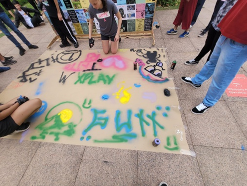
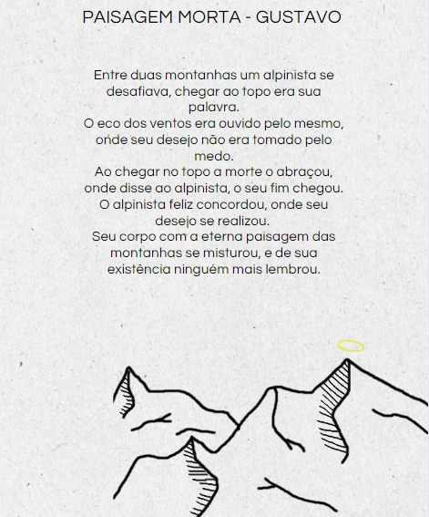

Como atividade segundo ano a que eu mais gostei foi a produção de stencil, lambe lambe e pixo nas aulas de artes para nossa primeira mostra cultural, me lembro de toda a sala junta cada um fazendo sua arte para ser exposta para tantas pessoas, sem dúvidas vou me lembrar para sempre desta experiência.
Foi nesta atividade que descobri um dos meus gostos na área artística e de linguagens, foi uma experiência única produzir algo que é tão presente em nosso dia a dia e em nossa cidade, uma arte descriminada injustamente e que merece seu valor por suas críticas ao nosso sistema e tantas outras injustiças.

Para a atividade do terceiro ano escolhi uma bem recente, a atividade integrada do quarto bimestre, onde em grupos cada um teve que criar um mini conto sobre um mesmo tema para todos, e criar uma ilustração que tivesse relação com este mini conto.
Gostei muito dessa atividade pois além de criar algo sobre literatura, também tivemos a liberdade de explorar nosso lado artístico para fazer a ilustração, e eu pessoalmente gosto muito de explorar este lado meu, e queria que isso fosse mais requisitado e explorado em nossos trabalhos escolares.